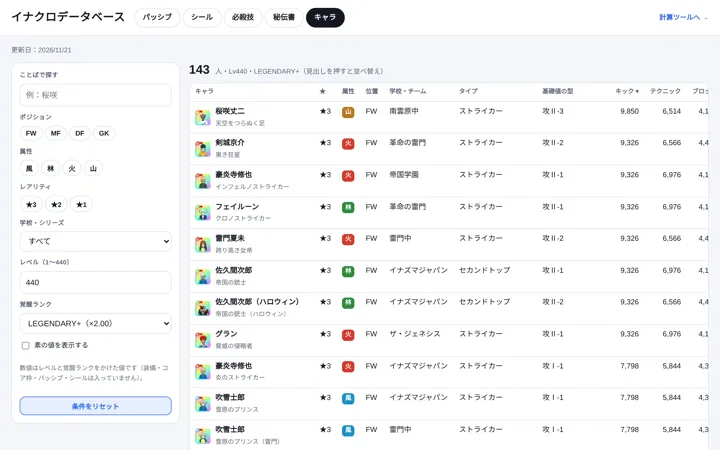
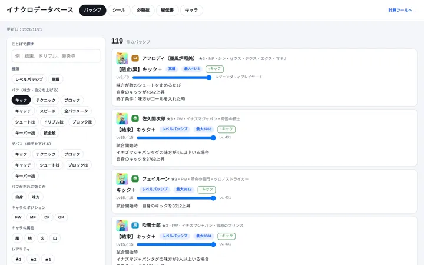
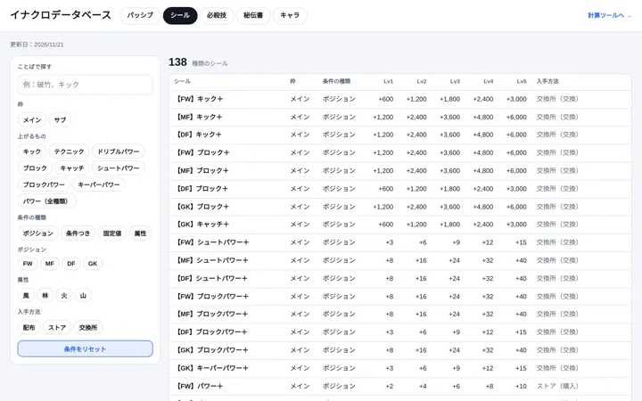
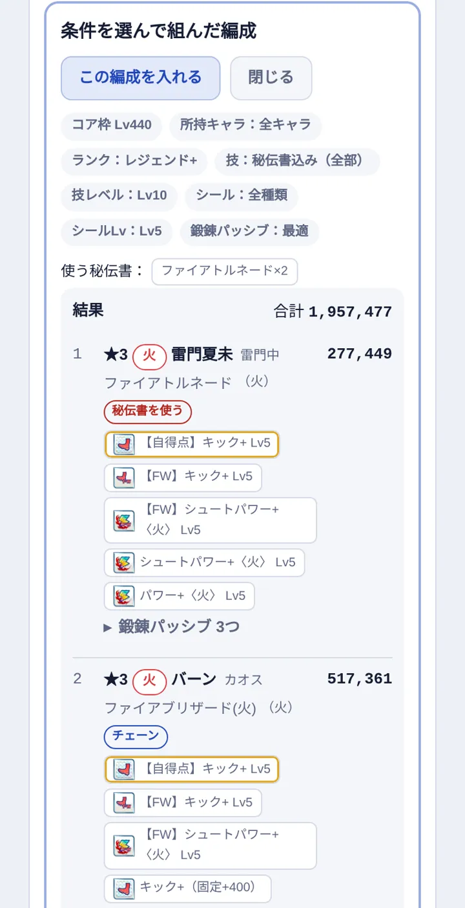
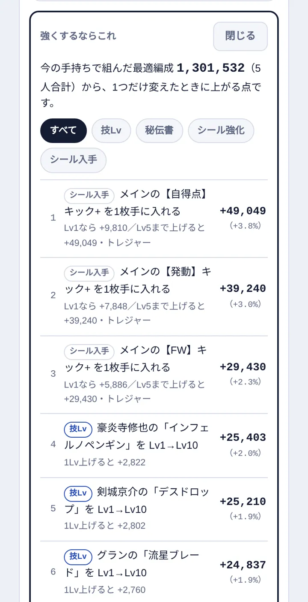
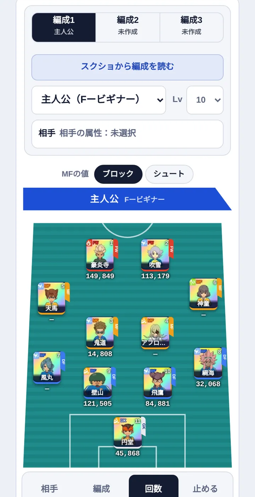
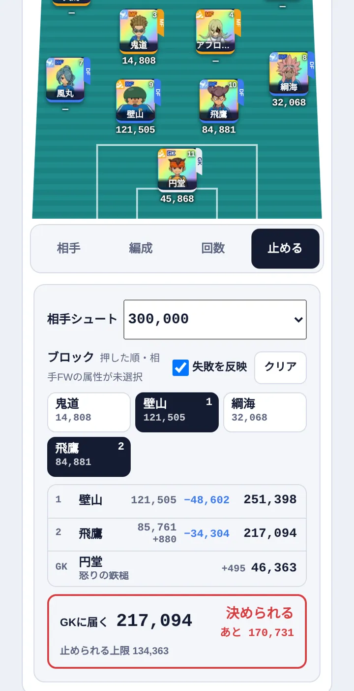
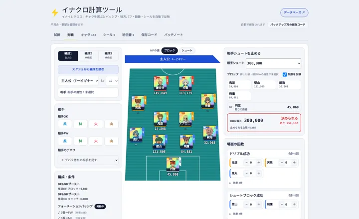

「このパッシブ持ってるの誰だっけ」「このシールどこで手に入る？」を、ゲームを開かずに調べられます。計算ツールの右上の「データベース」から開けて、ログインもそのままです。








自分のアカウントに自動で保存されます。どの端末で開いても同じデータが出ます。「保存コード」はバックアップ用です。
同時に使えるのは1台だけです。別の端末でログインすると、前の端末はログアウトします。
いりません。同じブラウザで計算ツールに入っていれば、そのまま開けます。データベースの数値は、レベルと覚醒ランクをかけた値です（装備・コア枠・パッシブ・シールは入っていません）。
素のステータスは、ゲーム画面の値と一致することを確かめています。データはゲーム画面を正としているので、違うところに気づいたら教えてください。
まずは「持っているキャラにチェック」と「コア枠のレベル」だけで大丈夫です。慣れてきたら、技Lvやシールを足していきましょう。